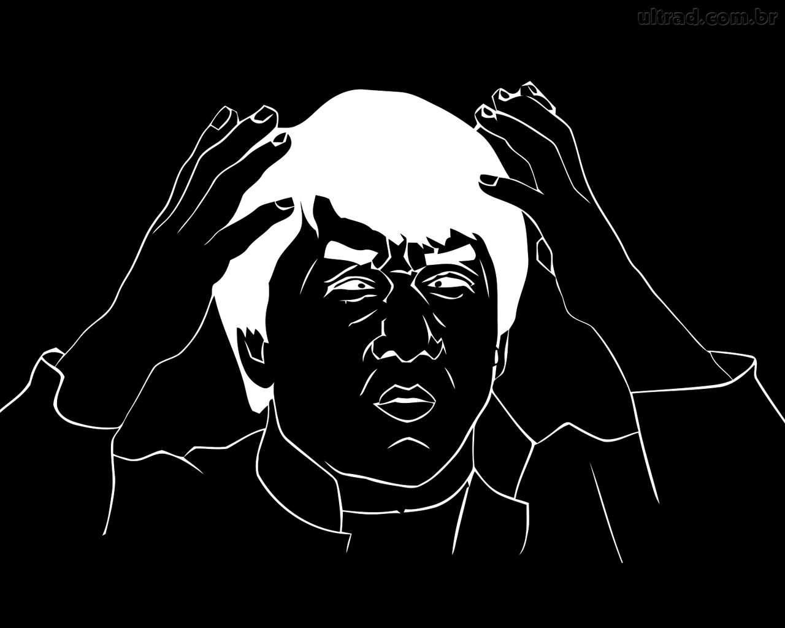
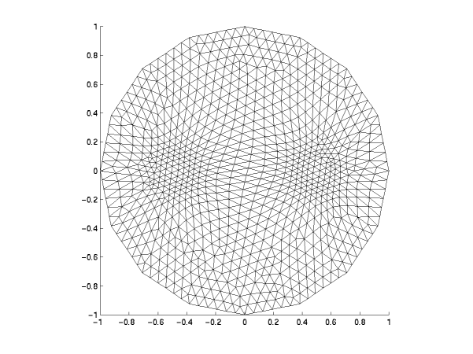
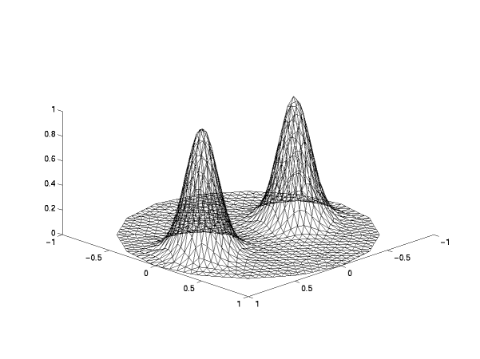
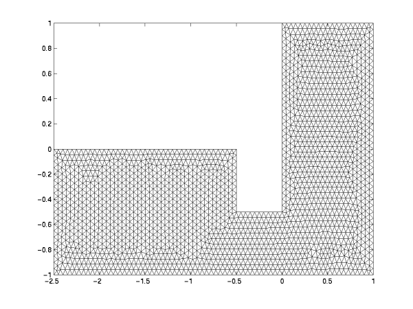
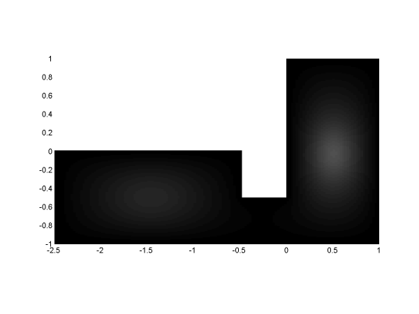

Your browser doesn't support the features required by impress.js, so you are presented with a simplified version of this presentation.
For the best experience please use the latest Chrome, Safari or Firefox browser.
Adaptive Moving Mesh Methods for Singular Problems
LANG5010, 2015 Spring
Xiaoyu Wei
A forefront area in scientific computation!
Why is the Moving Mesh Method Important?
Introduction
In ..
Fluid Dynamics
Hydraulics
Combustion
Heat Transfer
Reaction-Diffusion
..
To resolve large solution variations
very fine meshes are often required over a small portion of the physical domain.
Numerical solution of these problems using uniform meshes is formidable, even with the use of supercomputers when the systems involve two or more spatial dimensions.

How Does Moving Mesh Method work?
Method
Continuously reposition a fixed number of cells, such that they improve the resolution in particular locations of the computational domain.
For example, 2D wave equation:


Another example, convection-diffusion equation:


- Computational Domain
- Transformed Governing Equation
- Monitor Function
- Boundary Condition
Where are the research gaps?
Challenges
- Mesh Quality
- Complex Domain
- Dynamic boundary Conditions
Research plan:
Budget: $100,000 (HPC, labor, etc.)
Time: 1 year
{kind=link}